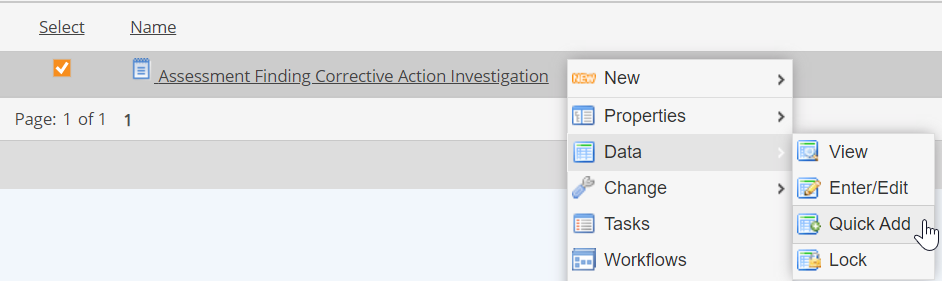
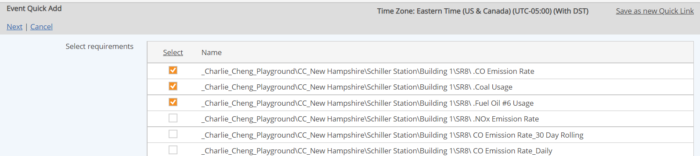
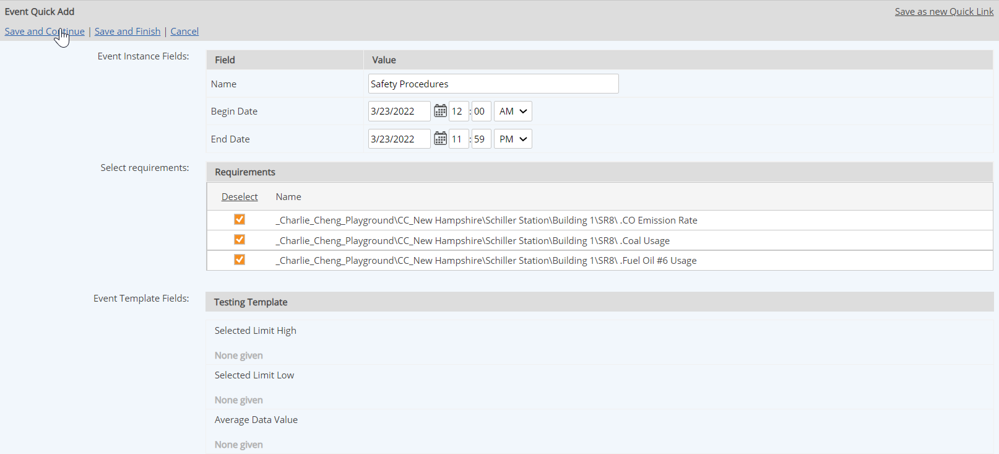
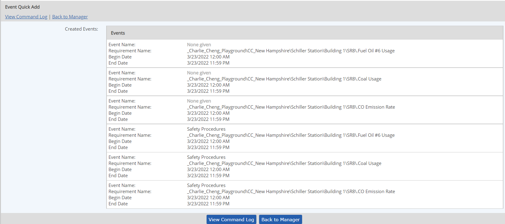

An event log may be used to log assessments and findings. When an Event Log is used for findings and assessments, the Quick Add mode of entering data should be used in order to group findings and assessments.
When events are created using Quick Add, findings are grouped by a common ID as one assessment for reporting purposes. The Issues/Findings per Assessment Aggregate Report can then be run to report on the results of assessments.
An optional ID Control field may be used on the Event Log to automatically increment the finding number for each event during entry. The counter must be reset to 1 for the first finding recorded for each new assessment.
To record assessment findings:
Select the assessments log in the Requirements view. Right click and select Data > Quick Add.

The requirements associated with the Event Log are shown.
Select all the requirements for which you want to create findings.

Complete the rest of the fields to document the finding.
One finding, with the same information, will be created for each requirement selected.

When you have created all the findings you need for the assessment, select Save and Finish.
A list of the events that were created are displayed.

To reset the finding number counter:
The finding number will automatically increment to the next number. You do not need to edit the number again until you want to create a new assessment group with a new date. The finding numbers can be viewed in the view mode for each record and will be shown in the assessment report.